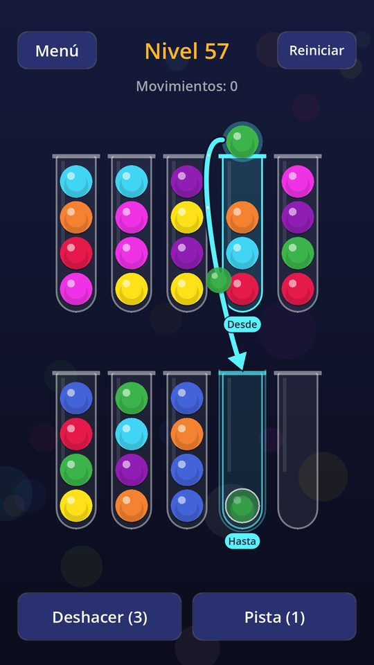
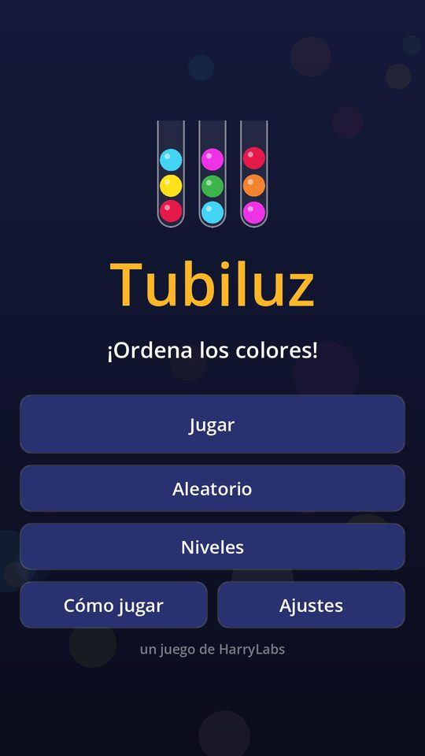
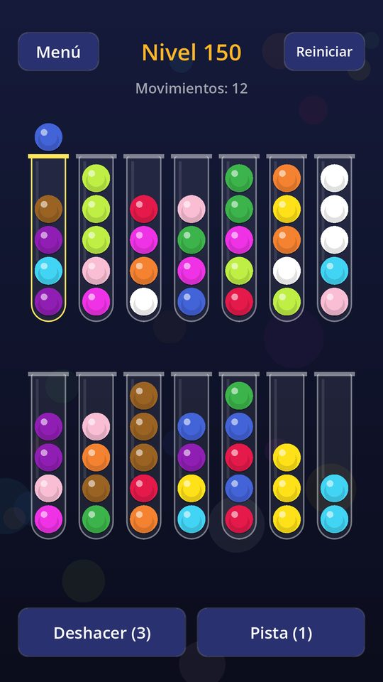
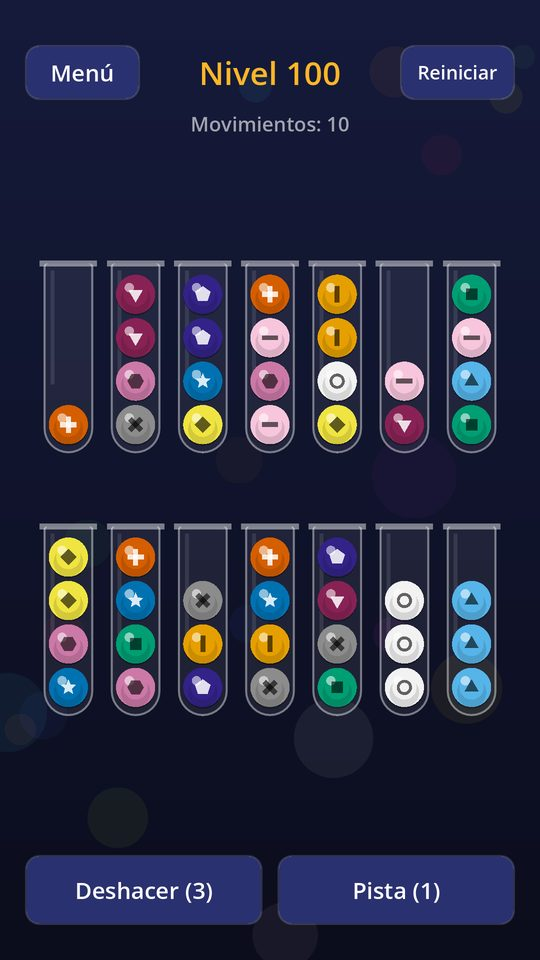
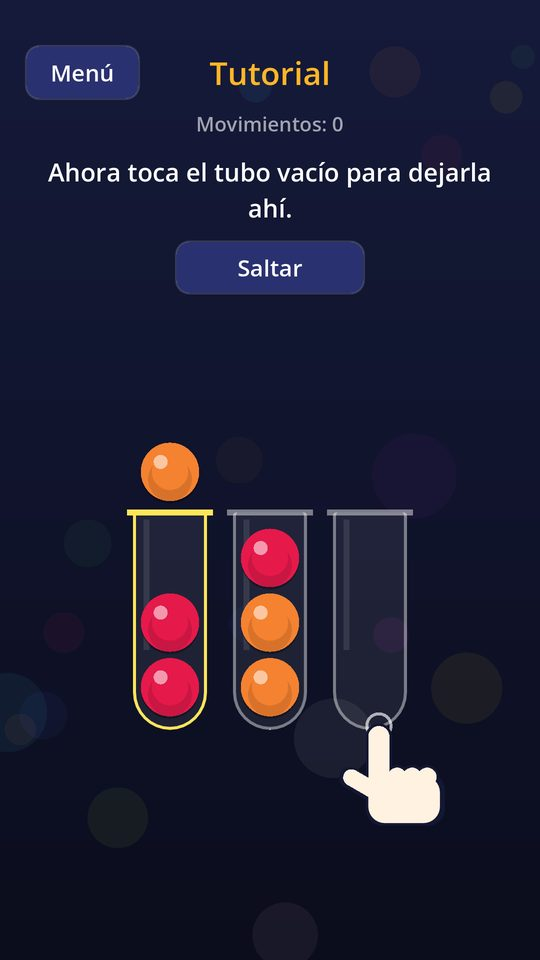
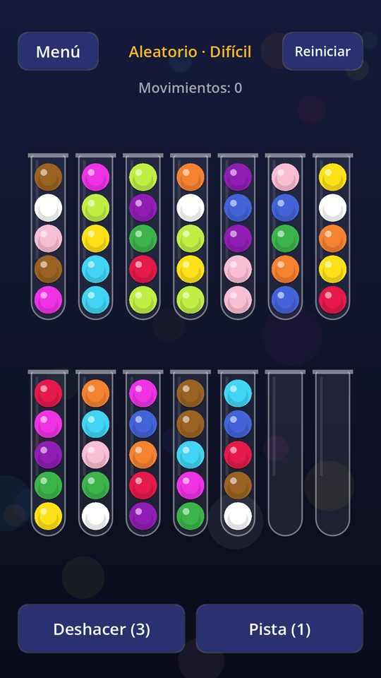
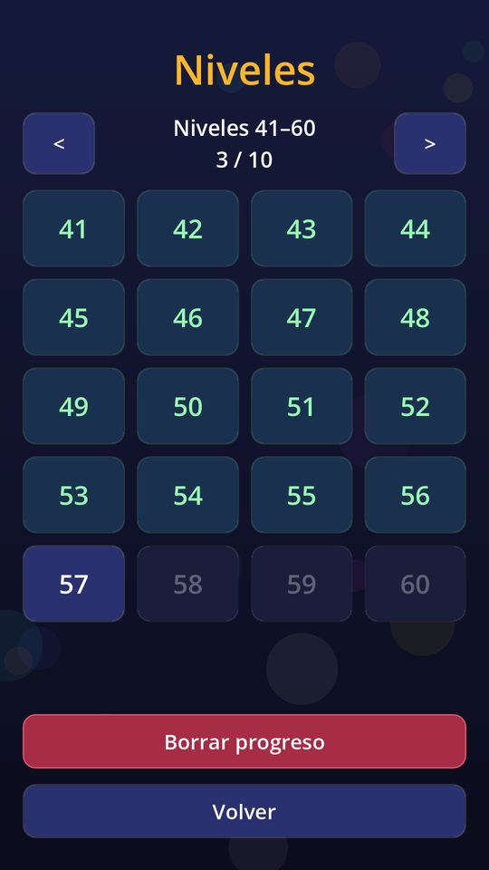
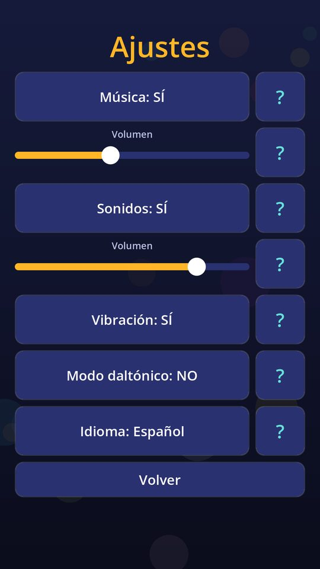

Tubiluz: Ordena los Colores
Ordena bolas de colores en tubos: 200 niveles, modo aleatorio y pistas guiadas.

Qué es Tubiluz
Es un puzzle tranquilo: toca un tubo para levantar la bola de arriba y luego otro para dejarla. Una bola solo puede ir sobre una del mismo color o en un tubo vacío. Ganas cuando cada tubo está vacío o lleno de un solo color.
- 200 niveles — de 3 a 12 colores, con tubos más altos y retos de un solo tubo vacío.
- Modo aleatorio — tableros sin fin en Fácil, Medio y Difícil, todos con solución.
- Pistas guiadas — iluminan origen y destino con un movimiento de la solución más corta.
- Tutorial — tres movimientos guiados la primera vez; puedes repetirlo cuando quieras.
- Modo daltónico — paleta más fácil de distinguir y un símbolo por color.
- Música y sonidos — relajantes, hechos para el juego; ajustables en Ajustes.
- Idiomas — Español, English, Português y Deutsch.
- Sin cuentas — el progreso y los ajustes se guardan en tu dispositivo.
Así se ve
Desliza para ver las capturas →








Ayúdame a probarlo
Estoy buscando personas de confianza para la prueba cerrada de Tubiluz en Android. Es gratis y me ayuda mucho a encontrar fallos antes del lanzamiento.
- Gratis
- Solo Android
- Cuenta de Gmail / Google
- Teléfono Android
Cómo unirte
- Envíale tu correo de Gmail a Harenson (también puedes escribir a harrylabs.games@gmail.com).
- Recibirás un enlace de invitación: ábrelo y acéptalo.
- Instala Tubiluz desde Play Store con esa misma cuenta.
- Quédate en la prueba al menos 14 días seguidos sin salirte.
Jugar un ratito de vez en cuando y contarme si algo falla ayuda muchísimo.
Tubiluz es gratis y muestra anuncios: así se financia el proyecto. Durante la prueba puedes darme tu opinión con total confianza.